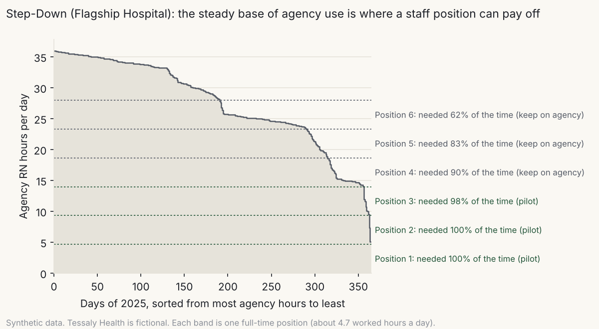
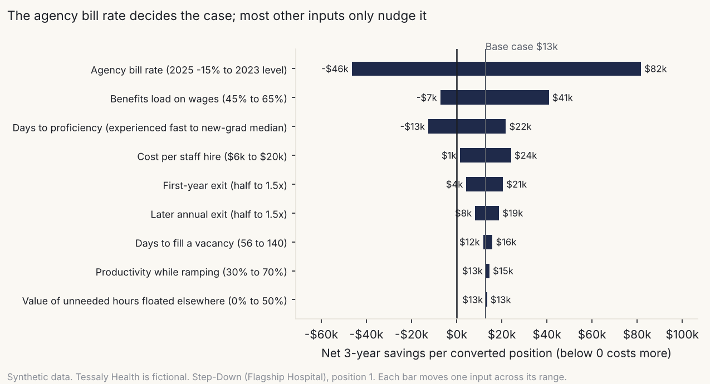

Agency nurses vs. staff nurses
Case study C · A workforce cost model: where converting agency hours to staff positions would pay, with sensitivity ranges
Tessaly Health is a fictional nonprofit health system. Staffing data is synthetic. Cost inputs are national public benchmarks or labeled assumptions. Results show a method, not real findings.
1. The question
Tessaly Health spent about $6.8 million on agency nurses in 2025. Leadership asked the obvious question: would hiring staff nurses for those hours be cheaper, and where? The answer needed to say how sure it was, because a conversion program means hiring people.
2. The data
| Source | What | Size |
|---|---|---|
| Synthetic generator (LIB-23, seed 20261108) | Required, staff, overtime, agency and unfilled RN hours by inpatient unit and day | 18 units × 1,096 days |
| Same | Agency contracts; RN hires, exits and time to proficiency | 634 contract segments; 6,387 employment records |
| BLS Employer Costs for Employee Compensation, Dec 2024 | Staff RN wage per hour worked ($51.09) and benefits ($28.43) in private hospitals | National |
| SIA/NATHO Travel Nurse Benchmarking Survey | Agency bill rates: $106.63 (2023), $90.13 (2024), $90.54 (2025) | National |
| NSI National Health Care Retention & RN Staffing Report 2026 | Time to recruit an experienced RN (78 days, range 56–102) | National |
| My assumptions | Cost per hire ($12,000), productivity while ramping (50%), worked hours per FTE (1,700), overtime payroll load (7.65%) | Each varied in the sensitivity analysis |
Turnover, exit rates and time to proficiency come from the synthetic data, which is tuned to national surveys.
Limits. The model prices cost only. Continuity of care, team knowledge and overtime fatigue are real and left out; section 6 says how I’d handle them. Benchmarks are national averages, and a real system would use its own rates.
3. Approach
- Compare like with like. Cost per worked hour for staff (wage plus benefits), overtime, and agency (bill rate plus orientation fee). Agency nurses also ramp up when they start on a unit. With assignments averaging 116 days and 13 days to proficiency, that adds about 6% to the effective agency rate. Leaving it out would tilt the comparison toward conversion.
- Find the base, not the average. A staff nurse is paid every scheduled shift, whether the hours are needed or not. So I split each unit’s daily agency hours into slices of one full-time position and measured from the 2025 data how often each slice was actually needed. The first slice on a busy unit is needed every day; the fifth may be needed only 80% of the time.
- Simulate each position for 3 years. Run day by day: recruiting lag, 14 days of orientation, a ramp to proficiency, exits at the unit’s observed rates, refills, and agency covering every gap. That’s 400 runs per position, with uncertain inputs drawn from ranges.
- Classify each position. Convert if at least 80% of runs save money; pilot if 60–80% save money and the average is positive; otherwise keep on agency.
- Test sensitivity. Move each input across its range for one representative position.
Alternatives I considered. A simple hourly comparison ($93 vs. $83, “save $10 an hour”) is what usually gets presented, and it overstates the case by ignoring hiring, ramp, turnover and idle hours. A full staffing-optimization model would be more precise, but it needs inputs (patient volume, skill mix) that a cost question shouldn’t wait for.
4. Validation
| Check | Result |
|---|---|
| With no exits and full use, the simulation matches a hand calculation | $37,879 vs. $37,903. Pass |
| Loaded staff rate read back against the BLS benchmark it came from | $79.70 vs. $79.53 for 2024 (rounding the benefits load). Pass |
| Converted positions never cover more hours than the unit bought from agency | 41 positions on 13 units. Pass |
| Results stable with a different random seed | 39 of 41 classifications identical; the 2 that changed sit at the 60% line. Pass |
| The LIB-26 calculator (JavaScript) reproduces the Python model | $13,979 vs. $13,322 for the same inputs (within simulation noise). Pass |
5. Findings (synthetic data, national benchmark rates)
The hourly gap is smaller than people think. In 2025 a fully loaded staff hour cost $83.05 and an agency hour $93.10: a 12% premium, or about 19% once agency ramp-up is counted. In 2023, at $106.63 an hour, the premium was 43%. The case for conversion was strong two years ago and is thin now.

Only the steady base can pay. Of 41 possible positions on 13 units, none clears the “convert” bar and 8 qualify for a pilot, on five high-turnover units. Each pilot position has an expected 3-year saving of $7,000 to $16,000 and a 60–67% chance of saving anything. Any position needed less than about 90% of the time loses money, because the hospital pays for hours it doesn’t use.
| Unit | Pilot positions | Expected 3-year saving |
|---|---|---|
| Medical-Surgical, Community North | 2 | $29,000 |
| Step-Down, Flagship Hospital | 3 | $28,500 |
| Medical-Surgical 1, Flagship Hospital | 1 | $16,200 |
| Medical-Surgical, Community South | 1 | $13,000 |
| Emergency Department, Community South | 1 | $9,100 |
| Total | 8 | about $96,000 (about $32,000 a year) |
That’s under 0.5% of annual agency spend. It’s real, but it isn’t a program.

The agency rate decides it. The break-even agency bill rate is about $87.40 an hour, just $3 below the 2025 benchmark. At the 2023 rate, the same position saves $84,000 over 3 years. Benefits cost and time to proficiency come next. A new graduate’s 168-day ramp, against 74 days for an experienced hire (case study B), turns a small saving into a loss.
Rate negotiation is worth more than conversion. A $1-an-hour reduction on Tessaly’s 73,500 agency hours saves about $73,500 a year, more than twice what all eight pilot positions are expected to save.
Retention helps, a little. If on-time onboarding cut first-year exits as case study B suggests (risk ratio 0.77), the first Step-Down position’s expected saving rises from $12,800 to $15,700. Worth having, not decisive.
6. What I’d do in practice
- Don’t announce a conversion program. Pilot the 3–4 steadiest positions (Step-Down at Flagship and Medical-Surgical at Community North), filled with experienced nurses, and track them against similar units for a year.
- Negotiate the rate first. It’s the largest lever in the model and needs no hiring.
- Set a trigger to revisit. Rerun the model when the agency bill rate passes about $95 an hour, or when benefits costs or turnover change materially. The calculator makes that a five-minute check.
- Decide the non-cost factors in the open. If nursing leadership values continuity enough to convert positions that are cost-neutral, that’s a legitimate choice. It should be recorded as a choice, not hidden in an assumption.
- Work on retention anyway. Every point of first-year turnover avoided makes every staff position cheaper, whether or not it replaced agency.
The calculator (calculator.html, LIB-26) lets anyone change the inputs and see the result.
7. Files
| File | What it is |
|---|---|
calculator.html |
LIB-26 conversion calculator (single web page, no external code) |
| Agency-to-staff conversion calculator (LIB-26) | LIB-26 page: purpose, worked example, design notes |
analysis/convert.py |
Rates, spend, slices, simulation, classification, tornado, scenarios |
analysis/visuals_c.py |
Charts |
analysis/validate_c.py |
Hand-calculation check, benchmark read-back, coverage check, seed stability, calculator cross-check |
outputs/ |
Result tables, inputs taken from the data, figures, validation report |
To reproduce:
cd case-studies/c-agency-vs-staff/analysis
python convert.py && python visuals_c.py && python validate_c.py
All code is AI-assisted (Claude). I designed the cost comparison, the base-load method, the simulation and the checks; Claude wrote the code to that design; the validation above is how I checked it.
Sources: BLS, Charting compensation costs during National Nurses Month (2025); SIA/NATHO Travel Nurse Benchmarking Survey, selected findings 2025 and 2026; NSI Nursing Solutions, 2026 National Health Care Retention & RN Staffing Report, as summarized by Becker’s.